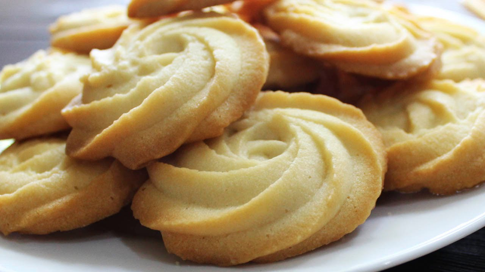

Whole wheat, Eggless biscuits

Whole wheat, Eggless biscuits Recipe
These whole wheat, egglesss biscuits use stample pantry ingredients, and are super easy to make. Even my 5 year old loves to help me when I make them.
Ingredients
- 4 tbsp ghee
- 1/4 cup powdered sugar / jaggery powder / unrefined sugar
- 1 cup whole wheat flour (atta)
- 1/3 tsp baking powder
- A pinch of salt
- 1/4 tsp cardamom powder (optional)
- 4-5 tbsp milk
Steps needed for recipe
- Sift in atta, baking powder, a pinch of salt and cardamom powder
- Combine roughly and add milk
- Combine lightly with hands till you get a soft crumbly dough
- Add a tablespoon or two milkif the dough is falling apart
- Shape the dough into a log and wrap in cling wrap
- Refrigerate for 30-40 minutes
- Cut 1/4 inch thick slices slices from the chilled log and place on a baking tray lined with parchment
- Bake at 170 degrees C/340 degrees F for 15-17 minutes till golden brown
- Once done, take out and cool on a wire rack
- Your eggless, whole wheat biscuits are ready. Enjoy!!
Homepage